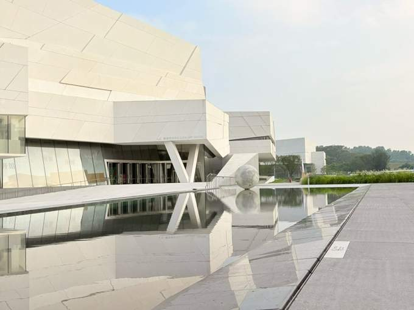

29 OCTOBER 2026 · PERSONAL STUDY EDITION
1029 口语模考复习Emails & Buildings 邮件与建筑
从给未来自己的信，到令人着迷的建筑。
沿着你的真实经历，练习清楚、完整地表达。

看题目 → 想关键词 → 遮住答案复述 → 对照调整
已练 0 / 10 题YOUR PRACTICE DESK
题目与答案复习
ONE SMALL ROUND · 10 MINUTES
不用一次记住全部。
01 / 2分钟
读熟三个词块
选自己今天最想用的。
02 / 3分钟
复述两道短回答
直接回答，再补一个理由。
03 / 3分钟
准备30秒，再讲建筑
顺着关键词说完整。
04 / 2分钟
对照检查一个问题
记住一句下次能用的话。